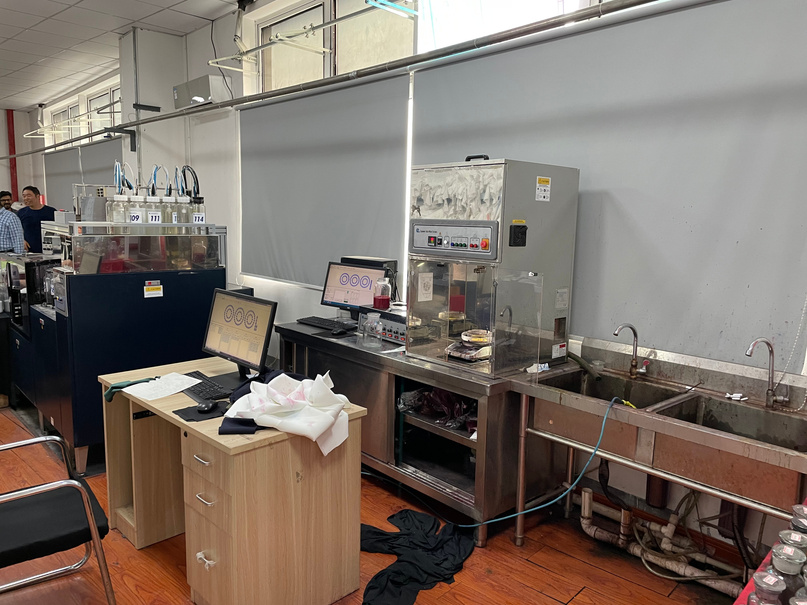
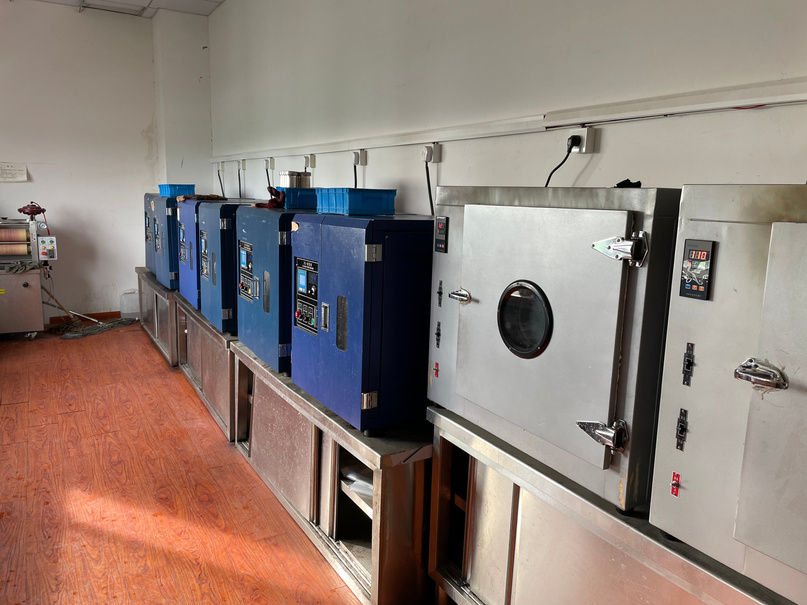

Unit 01
Shuangchen Textile
Active, sport and yoga wear — mainly poly and poly/spandex base.
Dyes the open-width and single knit programme
One knitting facility, three dyeing facilities and two marketing/merchandising arms — Landsun and RyderTextiles — sit inside China's densest knit textile cluster. Fabric does not travel between provinces between stages; it travels between buildings.
A general-purpose dye house makes every lot wait for the one before it. Splitting the work across three specialised units is what keeps a synthetic activewear order and an outerwear-fleece order off each other's schedule.
Active, sport and yoga wear — mainly poly and poly/spandex base.
Active, sport and yoga wear — poly, poly/spandex, nylon, nylon/spandex, modal/poly/cotton blends.
Outerwear fleece, sherpa and sweater fleece. Printing is handled here as well.


Lab dips, shade approval and physical testing sit on site, next to the machines that made the fabric.



Forward-looking, not live today — dated so buyers can plan around it.
25 tonnes/day dyeing and finishing capacity comes online at the Landsun Group plant in Vietnam.
The Vietnam plant scales to 50 tonnes/day dyeing and finishing capacity, matching the same QC standard as Changshu.